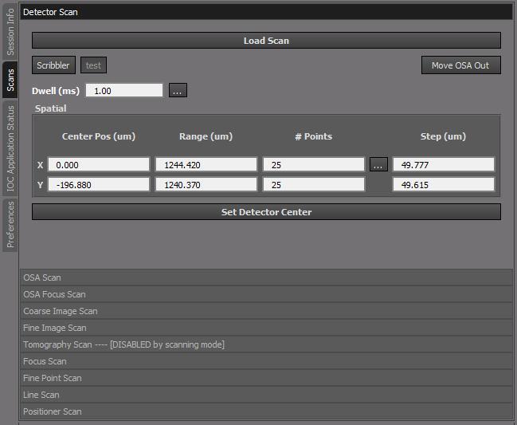
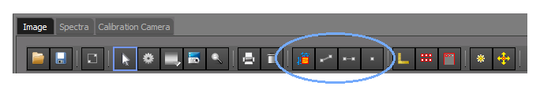
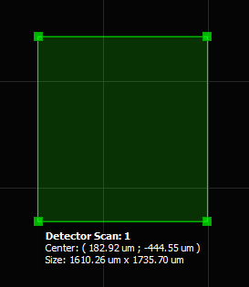
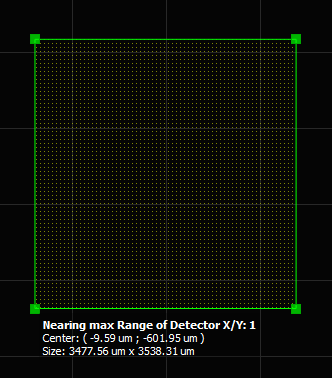
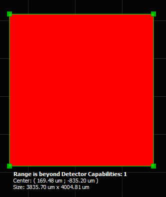

IOC Applications
Scans
{kind=link}
The Scans tab contains the results of what the system found in the scan_plugins sub directory of cls.applications.pystxm. The display order (from top to bottom) of the scans is determined in code by an ID number so that when loaded the order from top to bottom can be controlled. In this case the order of the scans is designed to go from Alignment type scans to Data collection and Data Collection refinement scans. Each scan has some combination of center and range along with dwell time in order to conduct the scan in the desired manner, some scans have extra features/buttons to make the scan more convenient.
Functions common to all scans is the ability to reload a previous scan with the Load Scan button as well if the user right clicks the mouse they will get a sub menu that will allow them to load or save other options if that scan allows them, some menu options will be disabled because they have no meaning for that particular scan.
Right click sub menu, here the scan allows all options to be enabled
Here the scan does not allow for an energy specification so it is disabled
As well, the graphical tools for selecting the scan region are located on the Image tab of the data visualization pane, the selection tools are dynamically enabled or disabled depending on the currently selected scan.
2D Selection Tool

This tool is enabled when the selected scan is a 2D scan, once the Scan has been selected, the user can graphically select the area for the scan by pressing the 2D Selection Tool and left clicking and dragging inside the image plot window, as the user drags a square will be drawn in the plot window indicating the selected area.
If the user increases the scan area to a point that is nearing the full range of the stages a warning message will be displayed on the plot
If the user has selected a scan area that is larger than the stages for that scan can accomplish the square will be filled with red and the range X and Y values of the scan will stop being updated until the user reduces the size of the square back to within the range of the stages.
